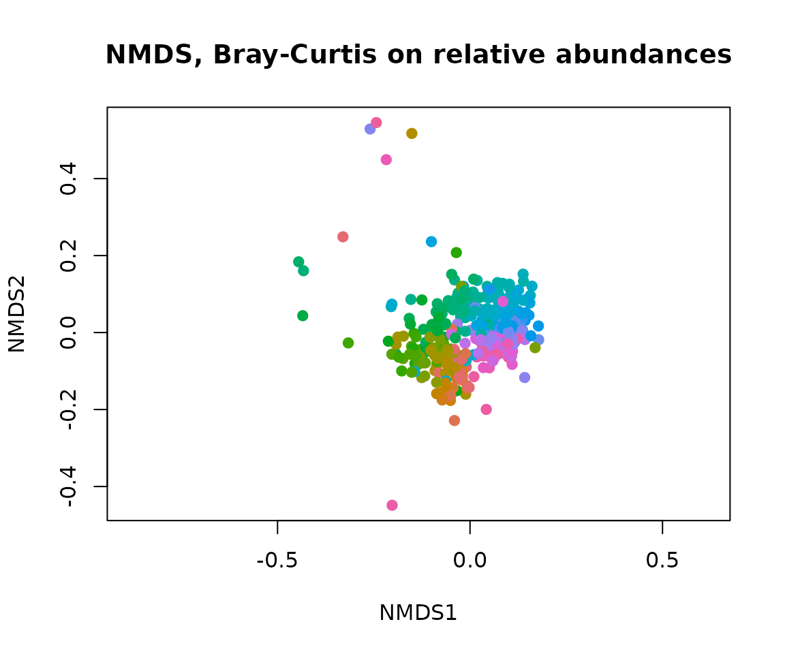
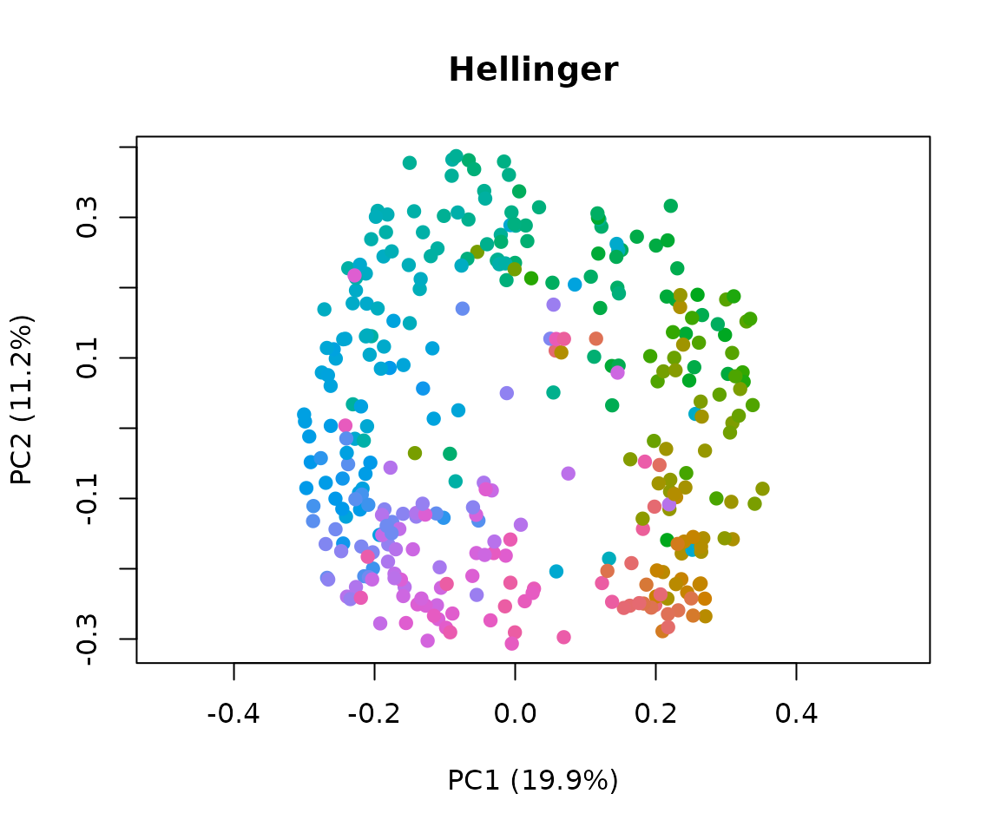
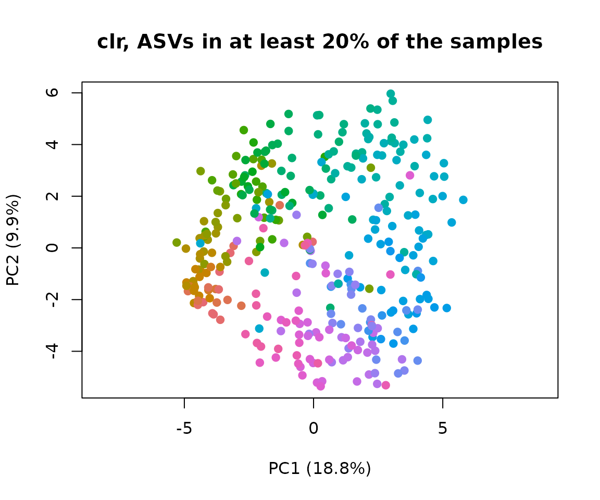
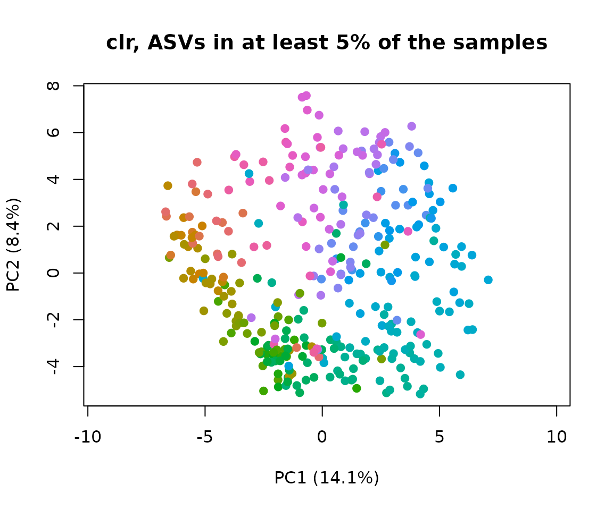
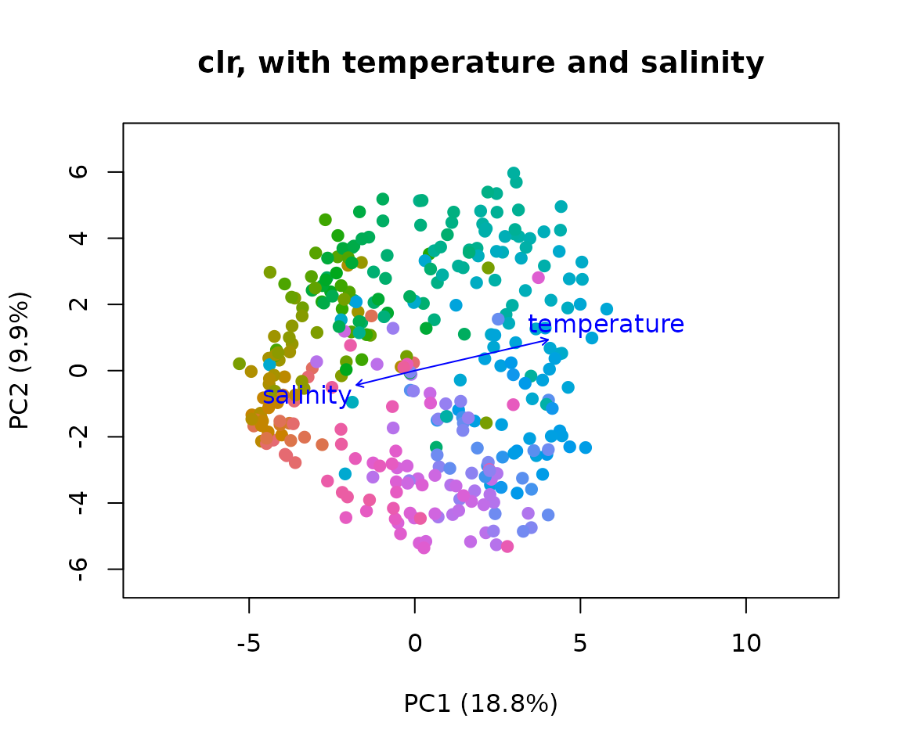
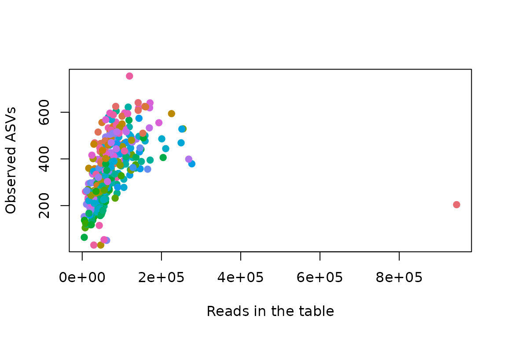
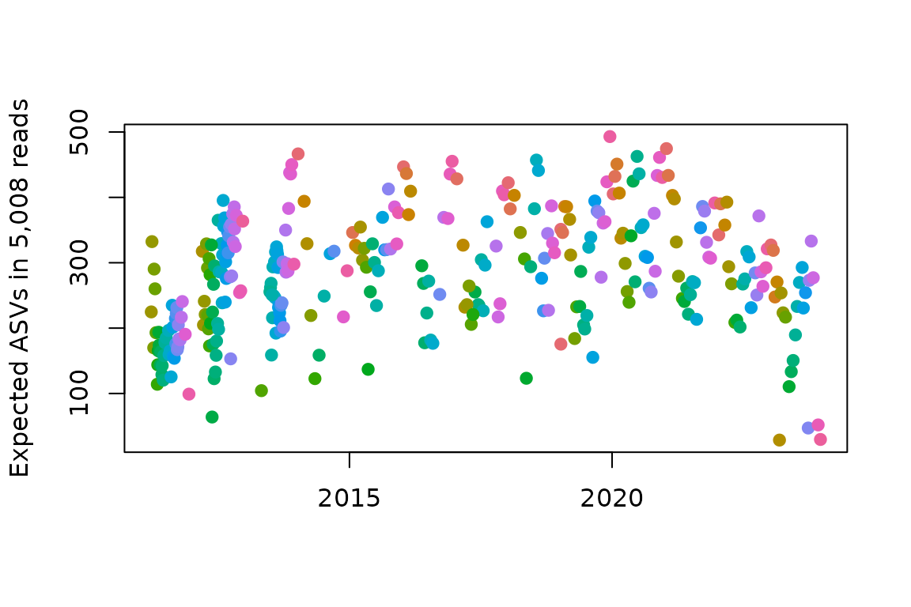

A seasonal time series of ASVs, from the published table to an ordination
Source:vignettes/seasonal-ordination.Rmd
seasonal-ordination.RmdThis vignette follows one dataset from the file you download to an ordination. The data is the 16S time series from the Linnaeus Microbial Observatory (LMO) in the Baltic Sea, 2011–2023, published through the Swedish ASV portal and GBIF. It was sampled about every two weeks, so the community should go round a seasonal cycle each year. That is what we look for in the ordinations.
The data
The dataset is lmo_2011-2023_16s
on the GBIF IPT of the Swedish node. Its Darwin Core archive (109 MB
zipped, 1.1 GB unpacked) holds 405,592 occurrences: one row per ASV and
sample, with the read count in organismQuantity. The same
measurements table has the temperature and, for most samples, the
salinity. It has two size fractions of the water, stored as the
measurement filter_fraction in
extendedmeasurementorfact.txt: 3 (particle
associated, trapped on a 3 µm filter) and 3-0.2 (free
living, trapped on a 0.2 µm filter after the 3 µm one).
The archive has the layout of GBIF’s standard Darwin Core archives,
not that of the ZIP files the asvoccur package reads, so we
read it directly. duckplyr reads the tab-separated files
without loading them into R, and the filtering stays lazy:
download.file("https://www.gbif.se/ipt/archive.do?r=lmo_2011-2023_16s", "lmo.zip", mode = "wb")
unzip("lmo.zip", exdir = "lmo")
tsv <- list(delim = "\t", quote = "", header = TRUE)
occurrence <- read_csv_duckdb("lmo/occurrence.txt", options = tsv, prudence = "stingy")
# all_varchar: the first rows of the measurements are numbers (temperature, salinity),
# which would make DuckDB read the whole column as numeric.
emof <- read_csv_duckdb("lmo/extendedmeasurementorfact.txt",
options = c(tsv, list(all_varchar = TRUE)), prudence = "stingy")
free_living <- emof |>
filter(measurementType == "filter_fraction", measurementValue == "3-0.2") |>
select(occurrenceID)
counts <- occurrence |>
semi_join(free_living, by = "occurrenceID") |>
transmute(sample = eventID, taxon = taxonID, quant = organismQuantity)
metadata <- occurrence |>
semi_join(free_living, by = "occurrenceID") |>
distinct(sample = eventID, date = eventDate, depth = minimumDepthInMeters) |>
as.data.frame()That is 162,171 rows, 347 samples and 24,286 ASVs.
prudence = "stingy" makes duckplyr stop with
an error if it would otherwise copy a whole table into R.
To keep the vignette fast, the package contains a smaller version of
the same table: the free-living fraction, with only the ASVs present in
at least 5% of the samples (data-raw/make_lmo_extdata.R
makes it from the archive, with the temperature and salinity of each
sample). The rest of the vignette uses it.
counts <- read_csv_duckdb(
system.file("extdata", "lmo_free_living.tsv.gz", package = "ecolongr"),
options = list(delim = "\t", header = TRUE), prudence = "stingy"
)
#> duckdb keeps downloaded extensions and secrets in a temporary directory:
#> ℹ /tmp/Rtmpt8VabY/duckdb
#> This is removed when the R session ends.
#> • Extensions are re-downloaded each session.
#> • Secrets are lost.
#> ℹ Run duckdb(shared_home = TRUE) (or create ~/.duckdb) to keep them (suitable for most users).
#> ℹ Run duckdb(shared_home = FALSE) to accept the temporary directory (and silence this message).
#> ℹ See ?duckdb_storage for details and alternatives.
metadata <- read.delim(system.file("extdata", "lmo_free_living_samples.tsv", package = "ecolongr"))
metadata$date <- as.Date(metadata$date)
metadata$day_of_year <- as.integer(format(metadata$date, "%j"))
metadata$month <- factor(format(metadata$date, "%m"))
counts |> summarise(rows = n(), samples = n_distinct(sample), taxa = n_distinct(taxon)) |> as.data.frame()
#> rows samples taxa
#> 1 120187 347 1441Filtering
The filters are duckplyr verbs, so the table is still
not in R. The depth of a sample is its number of reads in the table.
depth <- counts |> summarise(reads = sum(quant, na.rm = TRUE), .by = sample)
summary(as.data.frame(depth)$reads)
#> Min. 1st Qu. Median Mean 3rd Qu. Max.
#> 743 35280 58384 71479 89350 944762We drop the samples with fewer than 5,000 reads, and later the ASVs
that occur in fewer than 20% of the samples. duckplyr does
not translate filter(sample %in% vector) for a vector of
this length, so we filter with a join, as in the README.
el_vegdist() and el_rda() can only see the
samples that have rows, so we pass the sample table as
samples: it sets the order of the results to the order of
the metadata, which adonis2() and envfit()
rely on.
Colouring by season
The axis labels of a PCA give the percentage of the total variance of
the table that the axis holds: the eigenvalue divided by
tot.chi, not by the sum of the kept eigenvalues. We colour
the samples by day of year, with a palette that returns to its start, so
that a seasonal cycle shows as a ring with the colours in order.
season_colours <- function(day) hcl(h = 360 * day / 366, c = 90, l = 60)
plot_season <- function(ordination, main, ...) {
sites <- vegan::scores(ordination, display = "sites", choices = 1:2)
axes <- colnames(sites)
if (inherits(ordination, "rda")) {
percent <- 100 * vegan::eigenvals(ordination)[1:2] / ordination$tot.chi
axes <- sprintf("%s (%.1f%%)", axes, percent)
}
plot(sites, col = season_colours(metadata$day_of_year), pch = 19, asp = 1, main = main,
xlab = axes[1], ylab = axes[2], ...)
}Hellinger distances
Hellinger standardisation followed by Euclidean distance is a common
choice for amplicon counts. el_decostand() does the
standardisation lazily, and el_vegdist() runs the
query:
d_hellinger <- counts |>
el_decostand("hellinger") |>
el_vegdist("euclidean", samples = metadata$sample)
#> duckdb keeps downloaded extensions and secrets in a temporary directory:
#> ℹ /tmp/Rtmpt8VabY/duckdb
#> This is removed when the R session ends.
#> • Extensions are re-downloaded each session.
#> • Secrets are lost.
#> ℹ Run duckdb(shared_home = TRUE) (or create ~/.duckdb) to keep them (suitable for most users).
#> ℹ Run duckdb(shared_home = FALSE) to accept the temporary directory (and silence this message).
#> ℹ See ?duckdb_storage for details and alternatives.
class(d_hellinger)
#> [1] "dist"
attr(d_hellinger, "Size")
#> [1] 335The result is a dist, so vegan takes
over:
set.seed(1)
vegan::adonis2(d_hellinger ~ month, data = metadata, permutations = 199)
#> Permutation test for adonis under reduced model
#> Permutation: free
#> Number of permutations: 199
#>
#> vegan::adonis2(formula = d_hellinger ~ month, data = metadata, permutations = 199)
#> Df SumOfSqs R2 F Pr(>F)
#> Model 11 47.316 0.30173 12.688 0.005 **
#> Residual 323 109.499 0.69827
#> Total 334 156.816 1.00000
#> ---
#> Signif. codes: 0 '***' 0.001 '**' 0.01 '*' 0.05 '.' 0.1 ' ' 1Bray–Curtis distances and NMDS
Non-metric multidimensional scaling (NMDS) uses only the ranks of the
distances, so it needs no elaborate transformation. A common choice is
Bray–Curtis distance on relative abundances.
el_decostand("total") makes the relative abundances, and
vegan::metaMDS() takes the dist. Given a
dist, metaMDS() has no species scores and does
no transformation of its own, which it would do for a community matrix;
that matrix is what this package avoids building.
d_bray <- counts |>
el_decostand("total") |>
el_vegdist("bray", samples = metadata$sample)
#> duckdb keeps downloaded extensions and secrets in a temporary directory:
#> ℹ /tmp/Rtmpt8VabY/duckdb
#> This is removed when the R session ends.
#> • Extensions are re-downloaded each session.
#> • Secrets are lost.
#> ℹ Run duckdb(shared_home = TRUE) (or create ~/.duckdb) to keep them (suitable for most users).
#> ℹ Run duckdb(shared_home = FALSE) to accept the temporary directory (and silence this message).
#> ℹ See ?duckdb_storage for details and alternatives.
set.seed(1)
nmds <- vegan::metaMDS(d_bray, k = 2, trace = 0, trymax = 10)
nmds$stress
#> [1] 0.1607563
plot_season(nmds, "NMDS, Bray-Curtis on relative abundances")
The seasons are ordered along the cloud, but a few samples lie far from the rest and compress the view.
Principal components
el_rda() computes the first axes of a PCA without making
the dense table.
pca_hellinger <- counts |>
el_decostand("hellinger") |>
el_rda(k = 5, samples = metadata$sample)
#> duckdb keeps downloaded extensions and secrets in a temporary directory:
#> ℹ /tmp/Rtmpt8VabY/duckdb
#> This is removed when the R session ends.
#> • Extensions are re-downloaded each session.
#> • Secrets are lost.
#> ℹ Run duckdb(shared_home = TRUE) (or create ~/.duckdb) to keep them (suitable for most users).
#> ℹ Run duckdb(shared_home = FALSE) to accept the temporary directory (and silence this message).
#> ℹ See ?duckdb_storage for details and alternatives.
#> `el_rda()`: the first 5 axes hold 48.5% of the total variance and 51.5% is left out. Use `summary()` for the share of each axis.
plot_season(pca_hellinger, "Hellinger")
summary(pca_hellinger)$cont$importance[2:3, 1:3]
#> PC1 PC2 PC3
#> Proportion Explained 0.1987996 0.1115681 0.06577976
#> Cumulative Proportion 0.1987996 0.3103677 0.37614745The colours follow each other around a ring, one lap per year, so the seasonal cycle is the main structure in the first two axes.
The centred log-ratio
The Aitchison distance is the Euclidean distance on the centred
log-ratio (clr) of the counts. Zeros need a pseudocount. A pseudocount
of 1 / (the sample's reads) in each sample lets a shallow
sample, with its higher detection limit, get a larger pseudocount. Give
the raw counts: the pseudocount is in count units.
pseudocount = "inverse_depth" takes the reads from the
table it is given, so we compute the depths from the whole table first
and pass them by name, because we filter the ASVs below.
clr makes every cell non-zero, so it is not a method of
el_decostand(). It is computed from the counts inside the
two functions that use it, and the dense table is never built.
el_vegdist(method = "aitchison") returns the Aitchison
distance, and el_rda(transform = "clr") is a PCA of the
clr, whose sample distances in all axes are the same Aitchison
distances.
On amplicon data, the many rare ASVs dominate a clr unless they are removed. We keep the ASVs present in at least 20% of the samples:
n_samples <- nrow(metadata)
depth <- counts |>
summarise(total = sum(quant, na.rm = TRUE), .by = sample) |>
as.data.frame()
pseudocount <- setNames(1 / depth$total, depth$sample)
common <- counts |>
summarise(prevalence = n_distinct(sample), .by = taxon) |>
filter(prevalence >= 0.2 * n_samples) |>
select(taxon)
common |> summarise(taxa = n()) |> as.data.frame()
#> taxa
#> 1 567
counts_common <- counts |> semi_join(common, by = "taxon")
d_aitchison <- counts_common |>
el_vegdist("aitchison", pseudocount = pseudocount, samples = metadata$sample)
#> duckdb keeps downloaded extensions and secrets in a temporary directory:
#> ℹ /tmp/Rtmpt8VabY/duckdb
#> This is removed when the R session ends.
#> • Extensions are re-downloaded each session.
#> • Secrets are lost.
#> ℹ Run duckdb(shared_home = TRUE) (or create ~/.duckdb) to keep them (suitable for most users).
#> ℹ Run duckdb(shared_home = FALSE) to accept the temporary directory (and silence this message).
#> ℹ See ?duckdb_storage for details and alternatives.
pca_clr <- counts_common |>
el_rda(k = 5, transform = "clr", pseudocount = pseudocount, samples = metadata$sample)
#> duckdb keeps downloaded extensions and secrets in a temporary directory:
#> ℹ /tmp/Rtmpt8VabY/duckdb
#> This is removed when the R session ends.
#> • Extensions are re-downloaded each session.
#> • Secrets are lost.
#> ℹ Run duckdb(shared_home = TRUE) (or create ~/.duckdb) to keep them (suitable for most users).
#> ℹ Run duckdb(shared_home = FALSE) to accept the temporary directory (and silence this message).
#> ℹ See ?duckdb_storage for details and alternatives.
#> `el_rda()`: the first 5 axes hold 39.8% of the total variance and 60.2% is left out. Use `summary()` for the share of each axis.
plot_season(pca_clr, "clr, ASVs in at least 20% of the samples")
summary(pca_clr)$cont$importance[2:3, 1:3]
#> PC1 PC2 PC3
#> Proportion Explained 0.1878552 0.09937606 0.04375883
#> Cumulative Proportion 0.1878552 0.28723123 0.33099005The cycle is there as well, as a filled disc rather than a thin ring.
For comparison, the same PCA with all the ASVs of the bundled table (those in at least 5% of the samples):
pca_clr_all <- counts |>
el_rda(k = 5, transform = "clr", pseudocount = pseudocount, samples = metadata$sample)
#> duckdb keeps downloaded extensions and secrets in a temporary directory:
#> ℹ /tmp/Rtmpt8VabY/duckdb
#> This is removed when the R session ends.
#> • Extensions are re-downloaded each session.
#> • Secrets are lost.
#> ℹ Run duckdb(shared_home = TRUE) (or create ~/.duckdb) to keep them (suitable for most users).
#> ℹ Run duckdb(shared_home = FALSE) to accept the temporary directory (and silence this message).
#> ℹ See ?duckdb_storage for details and alternatives.
#> `el_rda()`: the first 5 axes hold 33.3% of the total variance and 66.7% is left out. Use `summary()` for the share of each axis.
plot_season(pca_clr_all, "clr, ASVs in at least 5% of the samples")
With the ASVs that occur in 5–20% of the samples included, the points spread out more and the order of the colours is less clear.
Environmental variables
The temperature and the salinity of each sample are in
metadata. vegan::envfit() fits them to the
ordination, as arrows in the plot, and gives the share of variation each
explains and a permutation p-value. Samples without a salinity are
dropped with na.rm = TRUE.
env <- metadata[, c("temperature", "salinity")]
set.seed(3)
fit <- vegan::envfit(pca_clr, env, choices = 1:2, permutations = 199, na.rm = TRUE)
fit
#>
#> ***VECTORS
#>
#> PC1 PC2 r2 Pr(>r)
#> temperature 0.97426 0.22542 0.6817 0.005 **
#> salinity -0.97086 -0.23964 0.1318 0.005 **
#> ---
#> Signif. codes: 0 '***' 0.001 '**' 0.01 '*' 0.05 '.' 0.1 ' ' 1
#> Permutation: free
#> Number of permutations: 199
#>
#> 20 observations deleted due to missingness
plot_season(pca_clr, "clr, with temperature and salinity", xlim = c(-8, 12))
plot(fit, add = TRUE, arrow.mul = 5)
Temperature lies along the first axis and explains much more of the
variation (r2) than salinity, which points the other
way.
How much do the axes leave out?
el_rda() keeps the first k axes. The total
variance of the table is still known, so the share that the other axes
hold can be computed:
unexplained <- function(pca) 1 - sum(vegan::eigenvals(pca)) / pca$tot.chi
round(c(hellinger = unexplained(pca_hellinger), clr = unexplained(pca_clr)), 2)
#> hellinger clr
#> 0.52 0.60The share of an axis is its eigenvalue divided by the total variance,
tot.chi, which summary() does. Dividing by the
sum of the kept eigenvalues is wrong. Those shares sum to one over the
k axes whatever k is, so they hide what the
other axes hold:
Seasonal structure in the distances
A distance matrix is what vegan::adonis2() needs. The
month explains this share of the variation in each distance:
Alpha diversity
The same table gives the diversity of each sample.
el_specnumber() and el_diversity() return one
value per sample, named by sample, and the metadata joins on the
name:
richness <- el_specnumber(counts)
shannon <- el_diversity(counts, "shannon")
reads <- counts |>
summarise(reads = sum(quant, na.rm = TRUE), .by = sample) |>
as.data.frame()
alpha <- tibble(sample = names(shannon), shannon = shannon, richness = richness[sample]) |>
left_join(metadata, by = "sample") |>
left_join(reads, by = "sample")
head(alpha[, c("sample", "date", "reads", "richness", "shannon")])
#> # A tibble: 6 × 5
#> sample date reads richness shannon
#> <chr> <date> <dbl> <int> <dbl>
#> 1 LMO_2011-2023_16S:P10353_1017 2017-05-23 204223 406 4.16
#> 2 LMO_2011-2023_16S:P10353_1018 2017-06-15 135043 361 3.41
#> 3 LMO_2011-2023_16S:P10353_1019 2017-06-20 121584 354 3.81
#> 4 LMO_2011-2023_16S:P10353_1020 2017-07-06 109191 433 4.02
#> 5 LMO_2011-2023_16S:P10353_1021 2017-07-19 104947 313 3.43
#> 6 LMO_2011-2023_16S:P10353_1022 2017-08-01 210718 444 4.27Richness grows with the number of reads, so a deep sample looks richer than a shallow one.
plot(alpha$reads, alpha$richness, pch = 19, col = season_colours(alpha$day_of_year),
xlab = "Reads in the table", ylab = "Observed ASVs")
el_rarefy() gives the richness each sample is expected
to have in a subsample of a common number of reads. It is exact, with no
random numbers, and equals vegan::rarefy(). At the depth of
the shallowest sample the samples are comparable, and richness over time
can be read:
common_depth <- min(alpha$reads)
alpha$expected <- el_rarefy(counts, common_depth)[alpha$sample]
plot(alpha$date, alpha$expected, pch = 19, col = season_colours(alpha$day_of_year),
xlab = "", ylab = sprintf("Expected ASVs in %s reads", format(common_depth, big.mark = ",")))
el_drarefy() gives, for each ASV in each sample, the
probability that it is in such a subsample, as a lazy table.
el_rrarefy() draws one random subsample instead and returns
it as a table, for analyses that need counts at equal depth.
A model of how many ASVs a sample has not yet shown needs the number
of ASVs seen once, twice and so on. el_frequency_counts()
computes that for every sample in one lazy step:
frequencies <- counts |> el_frequency_counts() |> as.data.frame()
frequencies |> filter(sample == metadata$sample[1]) |> head()
#> sample count n_taxa
#> 1 LMO_2011-2023_16S:P2256_1001 17 4
#> 2 LMO_2011-2023_16S:P2256_1001 1593 1
#> 3 LMO_2011-2023_16S:P2256_1001 9 6
#> 4 LMO_2011-2023_16S:P2256_1001 79 1
#> 5 LMO_2011-2023_16S:P2256_1001 1920 1
#> 6 LMO_2011-2023_16S:P2256_1001 115 1The breakaway package fits such models to one sample at
a time; the help page of el_frequency_counts() shows how to
run it on this table in parallel with purrr.